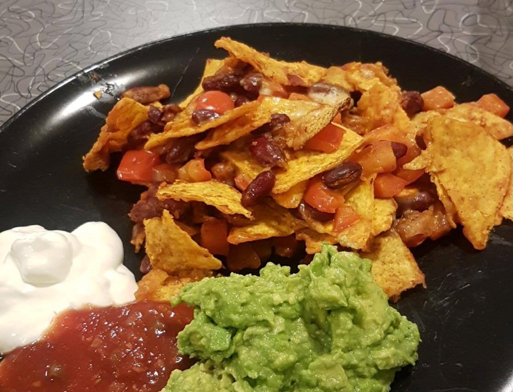

INGREDIENSER
- 1 boks kikerter
- 1 boks kidneybønder
- 1 pose taco-krydder
- 1/2 stk løk
- 1 pose tortillachips
- 3 dl revet ost
- 1 stk moden avokado
- 1 krukke salsa
- 1 boks rømme
SLIK GJØR DU DET
- Stek kikerter, kidneybønner og finhakket løk i en varm panne.
- Tilsett tacokrydder og vann. La sausen småkoke i 3 minutter.
- Legg tortillachips i en ildfastform og fordel bønneblandingen utover. Topp med ost.
- Gjenta dette 2-3 ganger
- Gratiner i stekeovn på 225°C i ca 7 minutter.
Server nachosen med most avokado, salsa og rømme. Bon appétit!